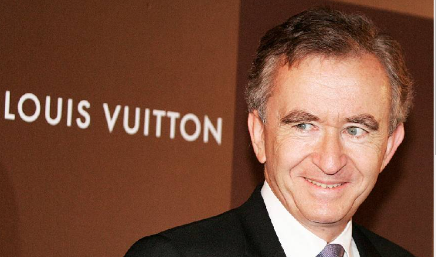

Arnault es el europeo más rico, según Forbes, que evalúa su fortuna en 195 mil millones de dólares, a fecha del 1 de octubre. Es el único multimillonario europeo que pude codearse en este ranking, dominado por los magnates americanos Elon Musk, Jeff Bezos, Mark Zuckerberg o Larry Ellison. El único que no es del sector tecnológico, sino del lujo: su consorcio, Louis Vuitton Moët Hennessy (LVMH), un conglomerado de 75 marcas que factura al año más de 86 mil millones de euros y del que Bernard Arnault